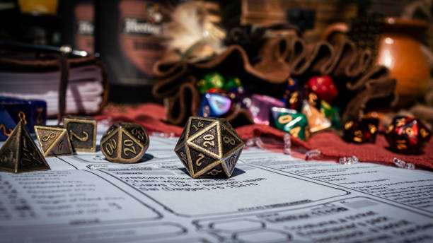
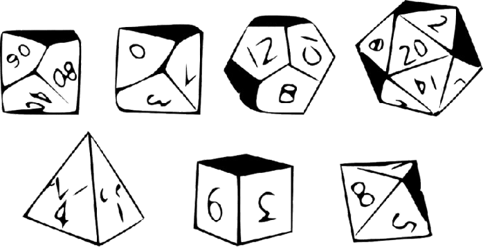

Um sistema de RPG é um conjunto de regras que define como jogar uma aventura de RPG
(Role-Playing Game, ou "jogo de interpretação de papéis").
Ele serve para que todos os jogadores entendam como o mundo funciona, como os
personagens
agem e como o Mestre (ou Narrador) conduz a história.
Pense assim:


🎲 O QUE É UM SISTEMA DE RPG?
- A história é como um filme ou livro.
- Os jogadores interpretam os protagonista
- O mestre controla o mundo, os inimigos e os desafios.
- O sistema é o manual que diz como resolver as situações (batalhas, testes, magia, etc).

⚔️ OS ELEMENTOS BASICOS DE UM SISTEMA
Quase todos os sistemas (D&D, Tormenta20, etc..) seguem uma base parecida:
1. Personagem
- Atributos (força, inteligência, carisma...) que representam suas habilidades naturais.
- Perícias/Habilidades (furtividade, conhecimento, luta, magia...) que mostram no que ele é treinado.
- Ficha: um papel (ou arquivo digital) que reúne todas essas informações.
2. Dados
- Atributos (força, inteligência, carisma...) que representam suas habilidades naturais.
- Perícias/Habilidades (furtividade, conhecimento, luta, magia...) que mostram no que ele é treinado.
- Ficha: um papel (ou arquivo digital) que reúne todas essas informações.
3. O Mestre (ou Narrador)
- Atributos (força, inteligência, carisma...) que representam suas habilidades naturais.
- Perícias/Habilidades (furtividade, conhecimento, luta, magia...) que mostram no que ele é treinado.
- Ficha: um papel (ou arquivo digital) que reúne todas essas informações.
4. Regras
- Atributos (força, inteligência, carisma...) que representam suas habilidades naturais.
- Perícias/Habilidades (furtividade, conhecimento, luta, magia...) que mostram no que ele é treinado.
- Ficha: um papel (ou arquivo digital) que reúne todas essas informações.
5. Historia
- Atributos (força, inteligência, carisma...) que representam suas habilidades naturais.
- Perícias/Habilidades (furtividade, conhecimento, luta, magia...) que mostram no que ele é treinado.
- Ficha: um papel (ou arquivo digital) que reúne todas essas informações.